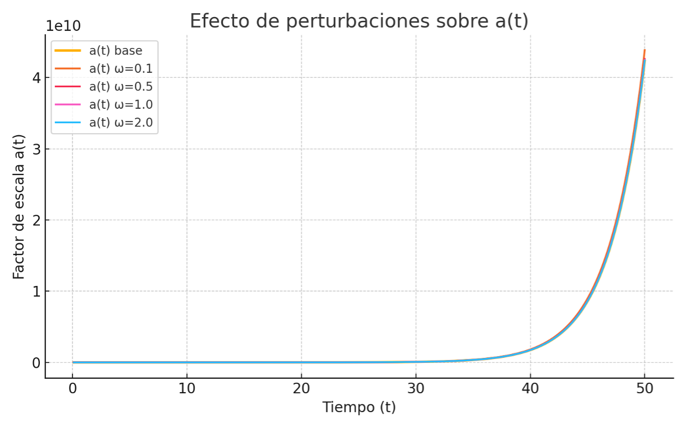
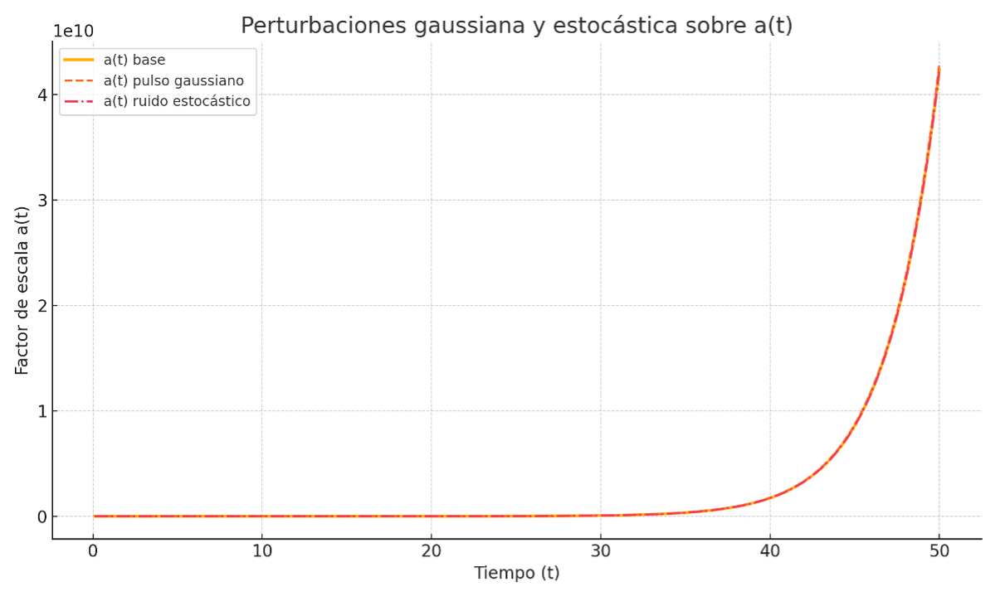

Términos perturbativos en la evolución energética del Modelo IE
1. Objetivo del análisis
Explorar cómo pequeñas perturbaciones sobre el comportamiento energético global del Modelo IE afectan a: - El factor de escala a(t), - La tasa de iterancias energéticas (expansión), - Posibles observables cosmológicos como ecos o anisotropías.
2. Hipótesis de partida
Partimos de la formulación base del modelo IE: ρ_IE(t) = ρ_∞ + (ρ₀ - ρ_∞) / [1 + (t / t_s)^α] Introducimos una perturbación multiplicativa pequeña: ρ(t) = ρ_IE(t) · [1 + ε · f(t)] donde: - ε << 1 es la amplitud de la perturbación, - f(t) es una función que puede representar oscilaciones, pulsos o ruido.
3. Consecuencias esperadas
4. Enfoques numéricos iniciales
5. Posibles extensiones
6. Resultados iniciales de simulación
Figura 8.2.1: Evolución de a(t) con diferentes ω
Como se observa, las perturbaciones inducen desviaciones leves pero apreciables en la evolución del universo, especialmente en fases tardías. Estas modulaciones podrían reflejarse en fenómenos observables como anisotropías residuales, ecos gravitacionales o activaciones energéticas discretas.
7. Perturbaciones gaussiana y estocástica
Se han explorado dos tipos adicionales de perturbaciones aplicadas a la densidad energética ρ(t) del Modelo IE, con una amplitud ε = 0.01: - Pulso Gaussiano: localizado en el tiempo (t₀ = 25, σ = 3), simula una activación puntual del sistema. - Ruido Estocástico suavizado: generado como una señal aleatoria con estructura de correlación, representa fluctuaciones cuánticas difusas o ruido modal. Ambos casos se aplicaron sobre la función ρ_IE(t) y se evaluó su efecto sobre el factor de escala a(t).
El gráfico muestra cómo cada tipo de perturbación afecta de forma diferente a la evolución del universo: - El pulso gaussiano genera una deformación localizada en el tiempo. - El ruido estocástico induce oscilaciones distribuidas a lo largo del tiempo. Estas modulaciones, aunque pequeñas, podrían estar asociadas a observables reales como ecos gravitacionales, fluctuaciones de temperatura en el CMB o incluso transiciones entre fases cuánticas internas del remanente.
Figura 8.2.2: Comparación de perturbación gaussiana y estocástica
